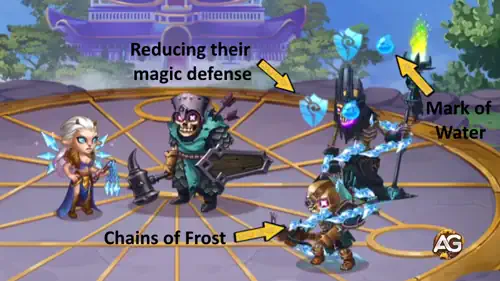

A tão aguardada reformulação da Krista chegou em Hero Wars: Dominion Era, transformando-a de uma maga sólida em uma verdadeira viradora de jogo. Com habilidades renovadas, novas Habilidades de Ascensão e uma sinergia aprimorada com as Marcas de Água, Krista agora está mais mortal do que nunca — tanto sozinha quanto em conjunto com Lars, Dilúvio
, e outros heróis.
Neste guia, vamos explorar o novo kit da Krista, sua história e suas melhores sinergias, analisando como a reformulação remodela seu papel no meta atual. Se você está curioso para saber se a Krista merece um lugar no seu time principal, continue lendo — a resposta pode te surpreender!
Guia da Krista - Hero Wars: Dominion Era, um jogo desenvolvido pela Nexters.
As Marcas de Água, antes consideradas efeitos negativos, agora são imparáveis — não podem ser bloqueadas ou removidas por Sebastian, Nebula ou heróis semelhantes. Isso torna as habilidades da Krista muito mais confiáveis e impactantes em todas as batalhas.
As Habilidades de Ascensão levam tempo para serem desbloqueadas, atrasando seu potencial total para jogadores novos ou iniciantes.
Menos eficaz contra heróis com alta resistência mágica ou que causem interrupção de energia.
Frágil nas fases iniciais se não estiver acompanhada de aliados ou mascotes protetores.
Prioridade de Evolução das Habilidades da Krista - Hero Wars: Dominion Era
Descubra quais habilidades da Krista você deve evoluir primeiro em Hero Wars: Dominion Era. Explicações simples, fórmulas de dano e prioridades de evolução incluÁdas.
Krista atinge o centro da equipe inimiga, reduzindo a defesa mágica deles e aplicando uma Marca de Água. Isso prepara dano extra dela e de outros heróis que usam Marcas de Água.
Fórmula: (10% do Ataque Mágico + NÁvel × 20)
Habilidade de Ascensão: Marcas de Água Generosas – Aliados curam 50% do dano mágico causado a inimigos com Marca de Água. Isso torna Krista uma incrÁvel hÁbrida de suporte e dano.
Prioridade de Evolução:Alta – Importante para aumentar o dano de todo o time e fornecer cura na Ascensão. Evolua essa habilidade depois da primeira.

Habilidade - Correntes de Gelo, Hero Wars Dominion Era.
Quando Krista está prestes a receber um grande dano, ela se protege com um bloco de gelo que absorve 50% do dano recebido por 2 segundos. É uma ferramenta defensiva de sobrevivência, não uma fonte de dano.
Habilidade de Ascensão: Cristalização Volátil – Após o fim do escudo, o bloco explode, causando (40% do Ataque Mágico + 1500) de dano aos inimigos próximos. Isso adiciona valor ofensivo nas fases mais avançadas do jogo.
As skins da Krista impactam diretamente sua performance ao aumentar seu dano mágico, penetração e sobrevivência. Skins ofensivas oferecem maior valor para o papel dela, enquanto skins defensivas dão suporte situacional.
Skin Padrão
Bônus de atributos: Inteligência +1.365
- Ataque mágico pela Inteligência: +4.095
- Defesa mágica pela Inteligência: +1.365
- Ataque fÁsico pela Inteligência: +1.365
Prioridade de Evolução:Baixa Prioridade – Fornece atributos básicos, mas tem menos impacto em comparação às skins especializadas.
Total de Pedras de Skin de Inteligência para o nÁvel máximo:
30.825
Skin Baile de Máscaras
Bônus de atributos: Ataque Mágico +10.650
Prioridade de Evolução:Alta Prioridade – Principal aumento de dano, a skin ofensiva mais importante da Krista.
Total de Pedras de Skin de Inteligência para o nÁvel máximo:
55.410
Prioridade de Evolução dos Artefatos da Krista – Hero Wars: Dominion Era
Os artefatos da Krista são essenciais para maximizar o impacto dela na equipe. Foque primeiro em aumentar sua sinergia com a ultimate e o dano do time, depois adicione sobrevivência e atributos base para uma progressão equilibrada.
Atributos ganhos: Vida +83.649 / Ataque Mágico +16.731
Prioridade de Evolução:Alta – Fornece um equilÁbrio entre sobrevivência e Ataque Mágico. Isso torna a Krista menos frágil contra explosões de dano enquanto ainda aumenta seu poder mágico. Importante, mas secundário em relação ao bônus em área do artefato de arma.
Artefato de Anel
Atributos ganhos: Inteligência +6.249
- Ataque Mágico proveniente de Inteligência: +18.747
- Defesa Mágica proveniente de Inteligência: +6.249
- Ataque FÁsico proveniente de Inteligência: +6.249
Os glifos da Krista melhoram significativamente seu desempenho ao ampliar seu dano e sua durabilidade. Foque primeiro no poder ofensivo para maximizar a sinergia com as Marcas d’Água, depois invista em sobrevivência e atributos secundários para equilÁbrio.
Melhores Aliados e Sinergias para Krista – Hero Wars: Dominion Era
A Krista tem melhor sinergia com heróis que potencializam os efeitos das Marcas d’Água. Esses aliados aumentam seu dano e controle de grupo, tornando as composições de equipe muito mais letais.
Habilidade: Refluxo
Ao retornar durante a Onda Titânica, Dilúvio aplica o efeito de Marca d’Água nos inimigos por 5 segundos. Sempre que um inimigo marcado recebe dano mágico, sofre dano adicional. Isso aumenta a sinergia da Krista ao ampliar o dano contra inimigos marcados.
Habilidade: Capacitor MP-300
O Capacitor de Poder Mágico do Isaac absorve parte do dano mágico recebido por ele e seus aliados, transformando-o em Carga. Isso reduz a efetividade do dano mágico da Krista e limita sua capacidade de aplicar as Marcas d’Água com eficiência.
Jorgen
Habilidade: Tormento da Impotência
Jorgen invoca um Crânio na linha de frente inimiga, causando dano mágico e impedindo que os inimigos afetados ganhem energia por 9 segundos. Isso atrasa o uso das habilidades da Krista e reduz seu dano total em lutas prolongadas.
Habilidade: Barreira de Rakashi
Rufus cobre sua equipe com um escudo que absorve todo o dano mágico. Isso anula efetivamente os ataques mágicos da Krista e reduz sua capacidade de influenciar a batalha com as Marcas d’Água.
Melhores War Flags para Krista – Hero Wars
Escolher as War Flags certas aumenta o dano mágico de Krista e a sinergia com as Marcas d’Água, maximizando sua eficácia em batalhas de equipe a partir da linha do meio.
BenefÁcio para Krista e Equipe: Reduz os nÁveis de habilidade dos inimigos, limitando a resposta deles aos ataques mágicos de Krista e à s Marcas d’Água. Isso facilita que Krista e seus aliados lancem feitiços de forma consistente.
War Flag of Decline:
Reduz a cura da equipe inimiga em 10%.
BenefÁcio para Krista e Equipe: Reduz a eficácia dos curandeiros inimigos, aumentando o impacto do dano mágico de Krista e das Marcas d’Água. Excelente para composições ofensivas na linha do meio.
War Flag of Recovery:
Aumenta toda a cura em 10%.
BenefÁcio para Krista e Equipe: Útil se Krista estiver combinada com aliados ou pets que se sustentam com cura. Ajuda-a a sobreviver mais tempo em batalhas prolongadas, embora seja menos essencial que Frost ou Decline.
Melhores Times para Krista – Hero Wars: Dominion Era
Principais Times de Defesa para Krista
#
Tabela: Melhores Times de Defesa para Krista
Aurora, Krista, Celeste, Sebastian, Lars, Axel
Krista, Jorgen, Folio, Lars, Lian, Khorus
Astaroth, Krista, Jorgen, Lars, Lian, Khorus
Astaroth, Krista, Jorgen, Lars, Martha, Khorus
Aurora, Krista, Jorgen, Lars, Thea, Khorus
Principais Times de Ataque para Krista
#
Tabela: Melhores Times de Ataque para Krista
Axel, Lars, Sebastian, Celeste, Krista, Aurora
Khorus, Lian, Lars, Folio, Jorgen, Krista
Khorus, Lian, Lars, Jorgen, Krista, Astaroth
Khorus, Martha, Lars, Jorgen, Krista, Astaroth
Khorus, Thea, Lars, Jorgen, Krista, Aurora
Conclusão – Guia de Krista Hero Wars: Dominion Era
O rework de Krista a transformou em uma poderosa maga da linha do meio, capaz de controlar o campo de batalha com as Marcas d’Água e ataques mágicos devastadores. Sua sinergia com heróis como Lars e Dilúvio a torna uma peça-chave em composições ofensivas, enquanto suas Habilidades de Ascensão e os artefatos, glifos e skins prioritários garantem que ela permaneça altamente eficaz em todas as fases do jogo.
Para maximizar o potencial de Krista, concentre-se primeiro em evoluir suas habilidades ofensivas principais, equipe-a com os pets, War Flags e skins corretos, e combine-a com aliados que amplifiquem suas Marcas d’Água. Posicionamento adequado e sinergia de equipe são fundamentais para desbloquear seu pleno potencial de dano e torná-la uma verdadeira virada de jogo em batalhas PvE e PvP.
Você gostou do nosso Guia da Krista para Hero Wars: Web e Facebook? Há algo que não entendeu ou gostaria de sugerir mudanças? Convidamos você a se juntar à nossa sessão de comentários na página do Alexandre Games Blog. Não hesite em expressar sua opinião, clarificar suas dúvidas e compartilhar sua sugestões. Clique no botão abaixo para começar:


 30.825
30.825